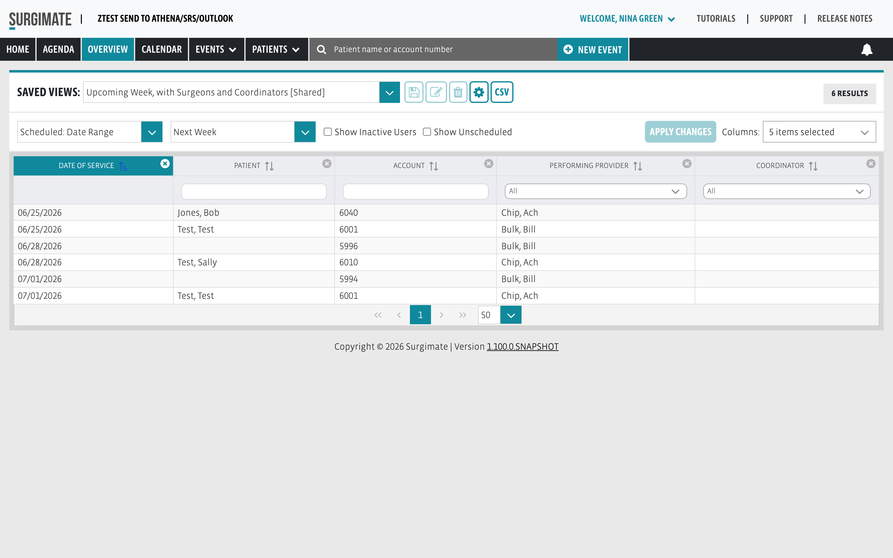
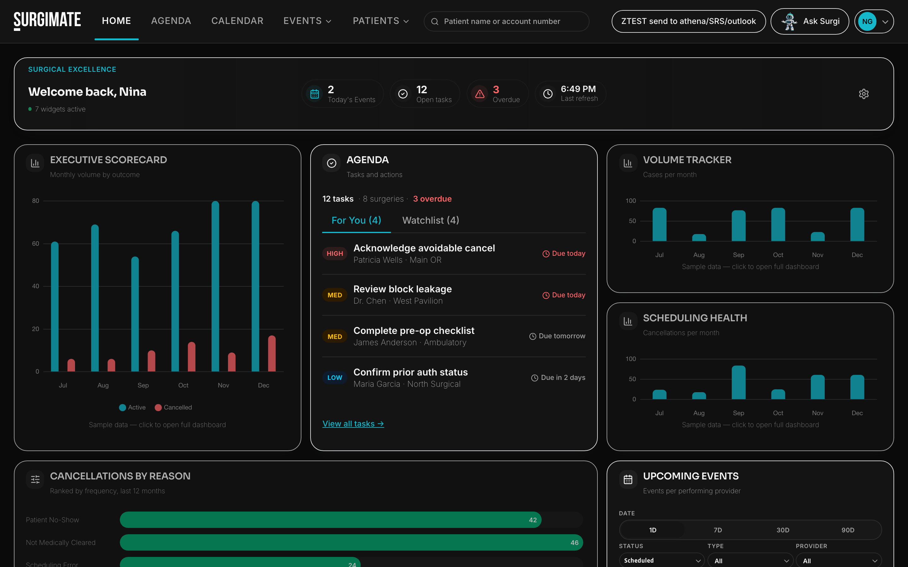
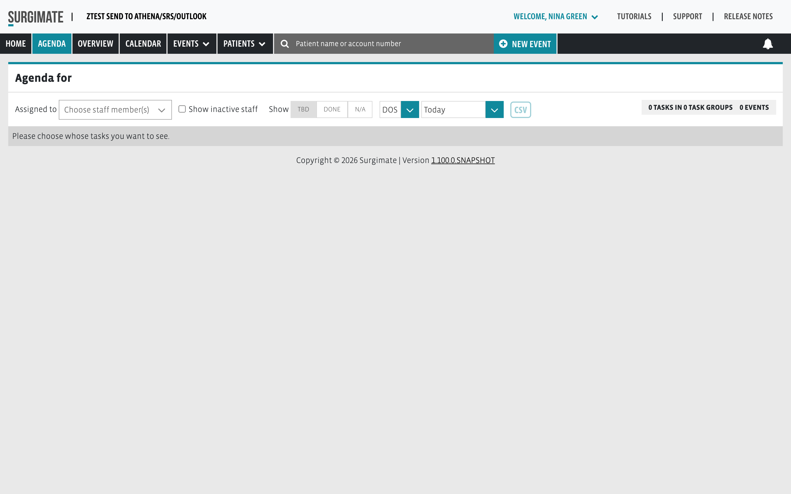
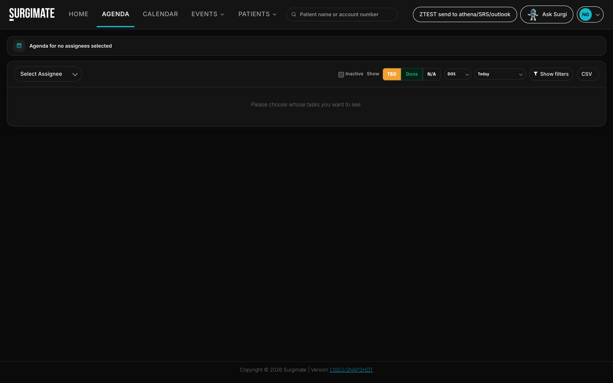
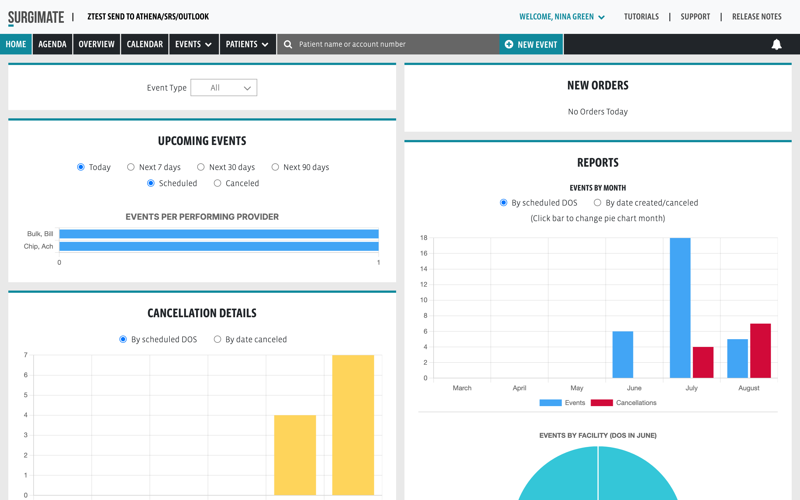
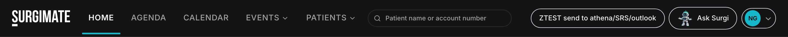

A visual tour of the new Launch Pad experience — movable home widgets, native Analytics Hub,
modern Agenda workbench, Surgi AI assistant, dark mode, and a responsive shell that scales
from desktop to mobile. Classic UI stays intact behind modern_ui_ux_enabled.
Client setting:modern_ui_ux_enabled — when OFF, users see today's develop experience unchanged.
When ON, the modern shell activates per client for phased beta feedback.
The big picture
Classic vs Modern — side by side
Same data, same permissions, same workflows — redesigned surfaces for Home, Navbar, Dashboards, and Agenda.
Nothing removed; items moved to clearer homes with rounded, token-driven visuals.
Before — Classic UI
app.surgimate.com — Overview (classic)

Live dev capture · ZTEST client · flag off
After — Modern Launch Pad
app.surgimate.com — Home (modern)

Live dev capture · same client · flag on · dark mode
classic — Overview tab
modern — Launch Pad
Agenda — classic vs modern
classic Agenda

modern Agenda

Home & reports — classic charts vs Launch Pad widgets
classic Home

modern Home widgets
Information architecture
What moved — nothing lost
Tabs consolidated into widgets and the native Analytics Hub. Data still flows from the same sources; navigation is shorter.
Personalized grid of movable, resizable widgets. Gear menu to add/remove, drag to reorder, +/- to resize columns and rows.
Overview table widget (full surgeries search)
Agenda preview → drills to Agenda tab
Chart/KPI widgets → drill to Dashboards
Per-user layout persisted per client
📊
Native Analytics Hub
Dashboards are 100% in the Angular codebase — identical Surgimate teal, typography, dark mode, and rounded cards. No Superset iframe when modern UI is on.
Executive Scorecard, KPI Center, Volume Tracker…
Report Library replaces Reports tab
Saved views per user per client per dashboard
Case list concepts fold into Overview saved views
✓
Modern Agenda
Workbench layout matching Home density: pill filters, status chips, dark-mode tokens, outside-click dropdowns.
Classic Agenda unchanged when flag is off
Assignee multiselect, TBD/Done/N/A pills
Row click → surgery scheduling
Navigation
New navbar — same power, better layout
The old header bar and tab strip are replaced by a single glassy navbar. Every classic action has a modern home.
modern navbar — live capture

Classic
Modern
Status
Top header + tab bar
Unified 68px navbar with Lucide icons
Improved
Overview tab
Overview widget on Home (+ deep link)
Moved
Reports tab
Dashboards → Report Library
Moved
Dashboards (Superset)
Dashboards (native Analytics Hub)
Rebuilt
Patient quick search
Rounded search in navbar
Same feature
Client switcher
Client picker dropdown in navbar
Same feature
Recent events menu
Events dropdown with recents + New Event
Same feature
Admin / Account / Help
Profile avatar dropdown + Appearance
Reorganized
—
Ask Surgi — slide-in AI panel (Bedrock, read-only P1)
New
—
Light / Dark appearance toggle
New
Mobile: cramped tabs
Responsive collapse, mobile search, touch targets
New
Launch Pad
Movable, sizable widgets
Edit mode lets each user build their morning command center. Widgets show live previews — click through to the full experience.
3×
Grid columns
1–3
Row spans
∞
Layouts per user
1
Gear menu
📋
Overview widget
Embedded surgeries search with saved views, filters, and CSV — replaces the standalone Overview tab for modern users.
✓
Agenda widget
For You + Watchlist task previews with priority pills and due dates. View all tasks → opens Agenda.
📈
Dashboard widgets
Curated KPI/chart subset — not every dashboard on Home. Click opens the full Analytics Hub page with saved views.
Polish
Surgi AI, dark mode & responsive
✦
Surgi AI Assistant
Pop-in panel from the right on any screen. Phase 1 is conversational and read-only, powered by AWS Bedrock — ask questions about your data without leaving context.
🌙
Dark mode
Profile → Appearance → Dark. Token-driven surfaces flip to neutral black (#0a0a0a) — Agenda, Dashboards, Home widgets, and navbar all respect the theme.
📱
Responsive everywhere
Not everyone uses a 15″ laptop. Navbar, widgets, tables, and hub cards reflow down to mobile widths with touch-friendly controls.
✨
Visual language
Surgimate teal (#10899c), Sora headings, Inter body, Lucide icons, soft 16px radii, subtle shadows, and light motion on hover — a modern SaaS feel.
Rollout
Phased beta with the feature flag
Enable modern_ui_ux_enabled per client in Admin → Client Settings. Classic users stay on develop UI until their client is opted in.
// ModernUiService — when OFF, body has no .modern-ui class → classic develop UI clientInfo.modernUiUxEnabled← RailsmodernUiUxEnabled(camelCase normalized) useNativeAnalyticsHub()=== isEnabled() — no separate analytics flag
7 HTML + Tailwind tokens — no new PrimeNG/Bootstrap in modern paths
8 Sora headings · Inter navbar/body
9 Token-first colors — never hardcode hex in components
10 Do not break classic UI when flag is off
Product / data rules
1 Everything drills into Overview data model
2 Case List → Overview saved views
3 Reports tab removed — 100% in Report Library
4 Ad-hoc reports → Overview extracts
5 Saved view per user per client per dashboard
6 Home widgets = small KPI subset that drill to full dashboards
Key paths (Angular)
home-workbench.component— Launch Pad grid toolbar.component.html— modern navbar (HTML) analytics-hub/*— native dashboards + landing agenda-modern.pug / agenda-classic.pug— split by flag css/tailwind.css— design tokens + hub/agenda styles modern-ui.service.ts— flag + body class + hub routing